3D histogram plot for nethist objects
plot3d.RdDrawing plot3D::hist3D() using a nethist, multinethist, or hnethist
object with a user-specified order.
Usage
plot3d(x, idx_order = 1:max(x$cluster), type = "nethist", ...)
# S3 method for class 'nethist'
plot3d(x, idx_order = 1:max(x$cluster), type = "nethist", ...)
# S3 method for class 'hnethist'
plot3d(x, idx_order = 1:max(x$cluster), type = "nethist", ...)
# S3 method for class 'multinethist'
plot3d(x, idx_order = 1:max(x$cluster), type = "nethist", ...)Arguments
- x
a
nethist,multinethist, orhnethistobject.- idx_order
A numeric vector for index label order, which must be a permutation of
x$cluster. IfNA, it uses1:max(x$cluster).- type
One of
"nethist"(default) or"prob"."MNhist"is a deprecated alias for"nethist".- ...
Other arguments passed to
plot3D::hist3D().
Examples
# \donttest{
set.seed(42)
data(IndianVil)
mnhist_Ind_vil <- multinethist(IndianVil)
plot3d(mnhist_Ind_vil)
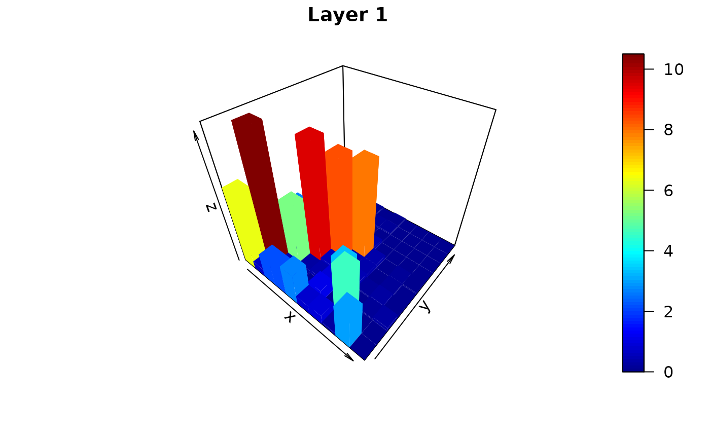
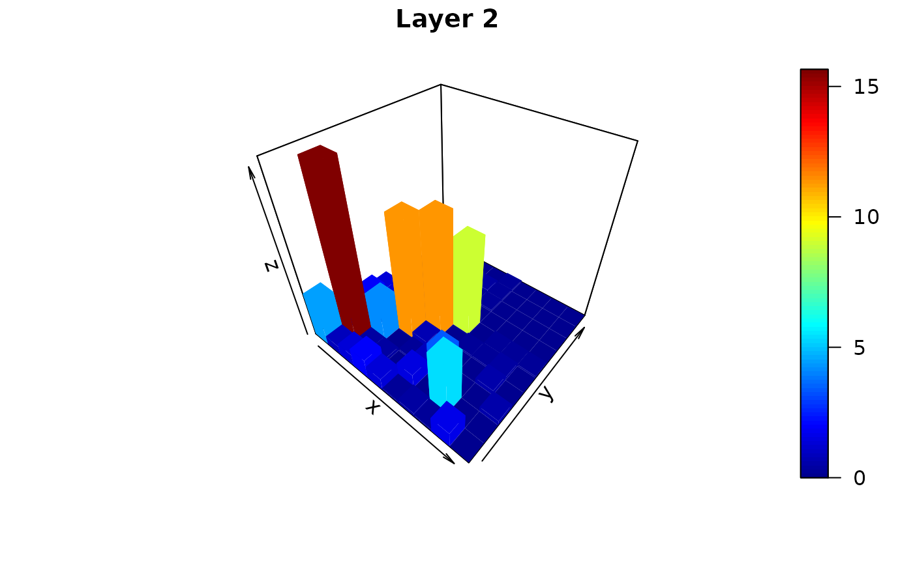
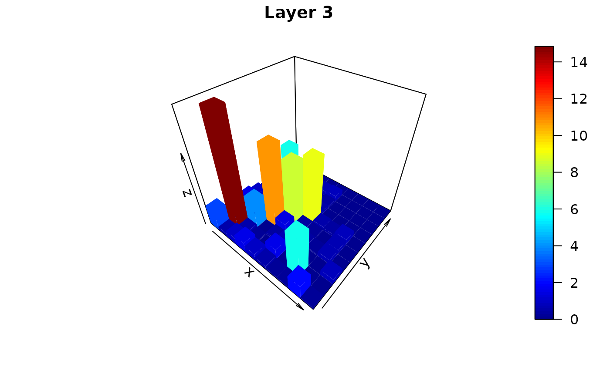
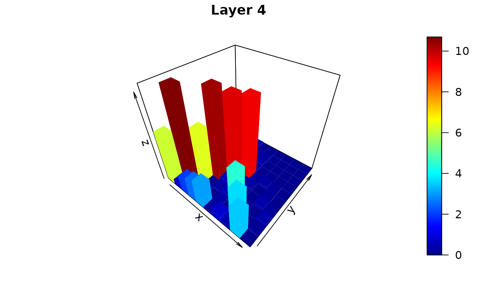
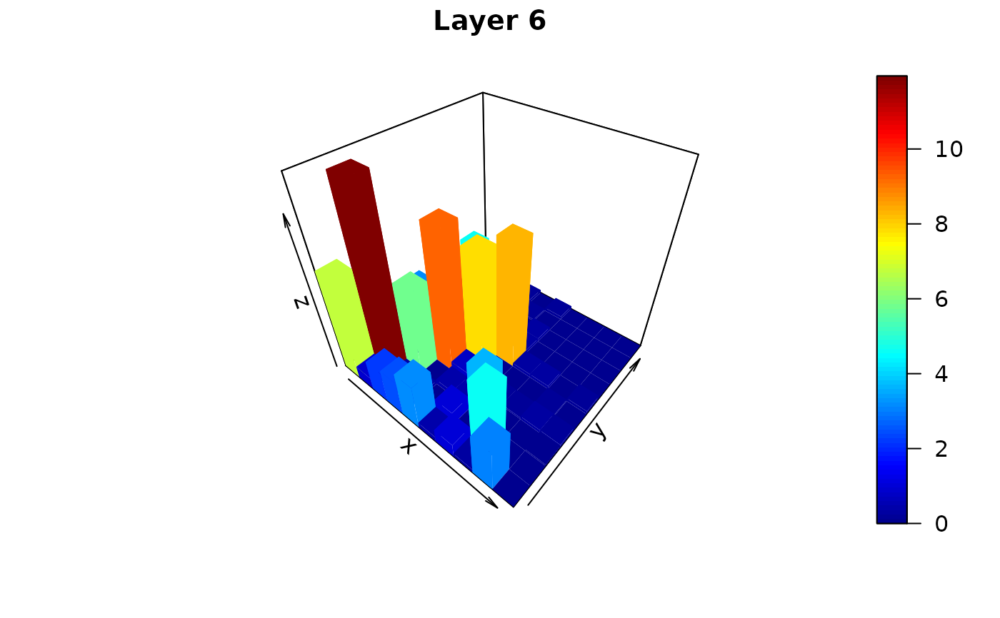
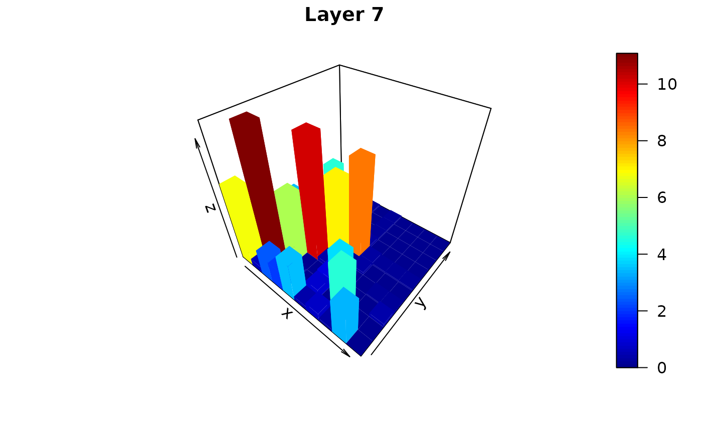
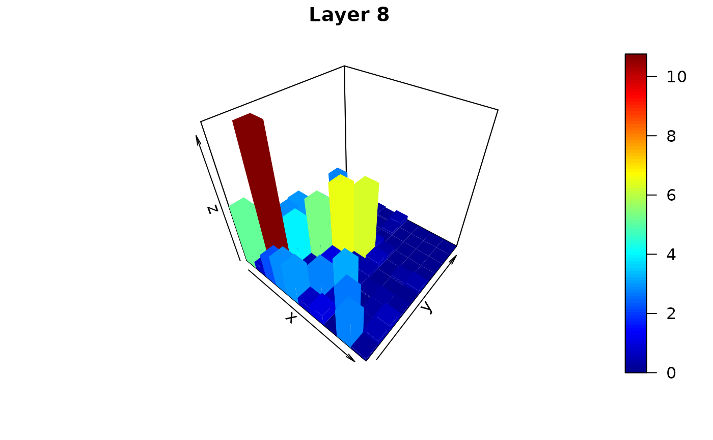
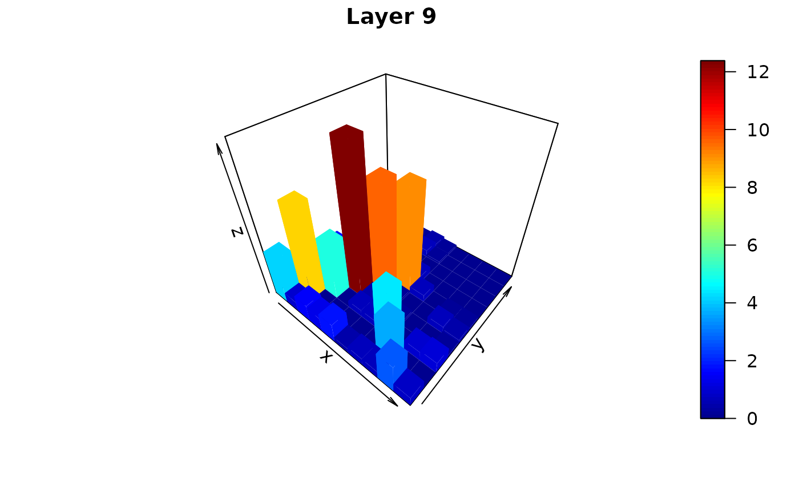
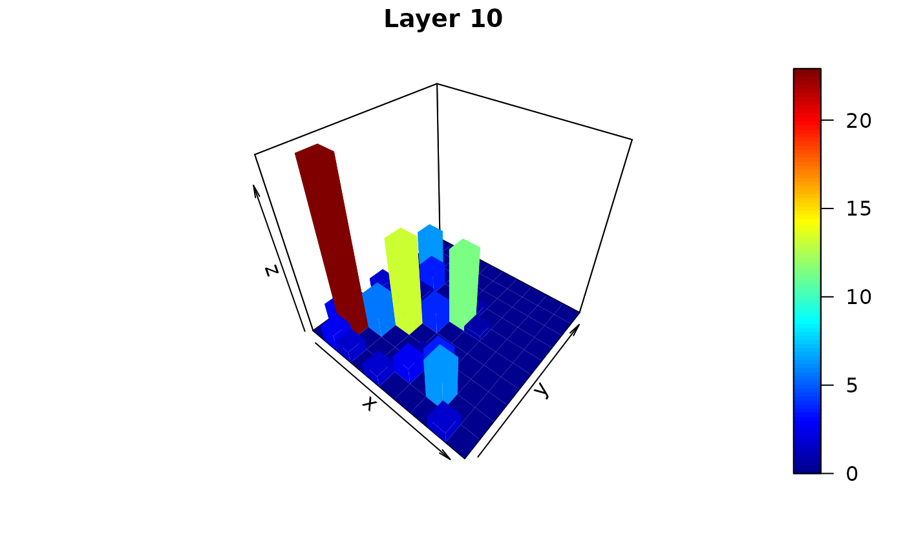
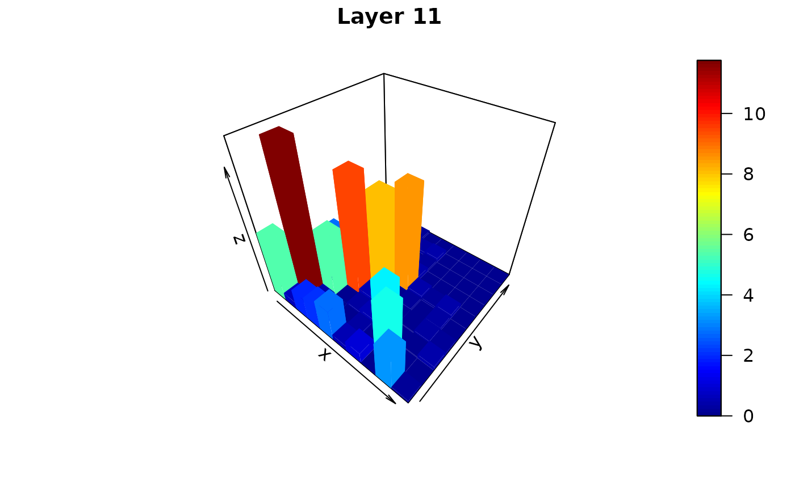
data(polblog)
fit <- nethist(polblog)
plot3d(fit)
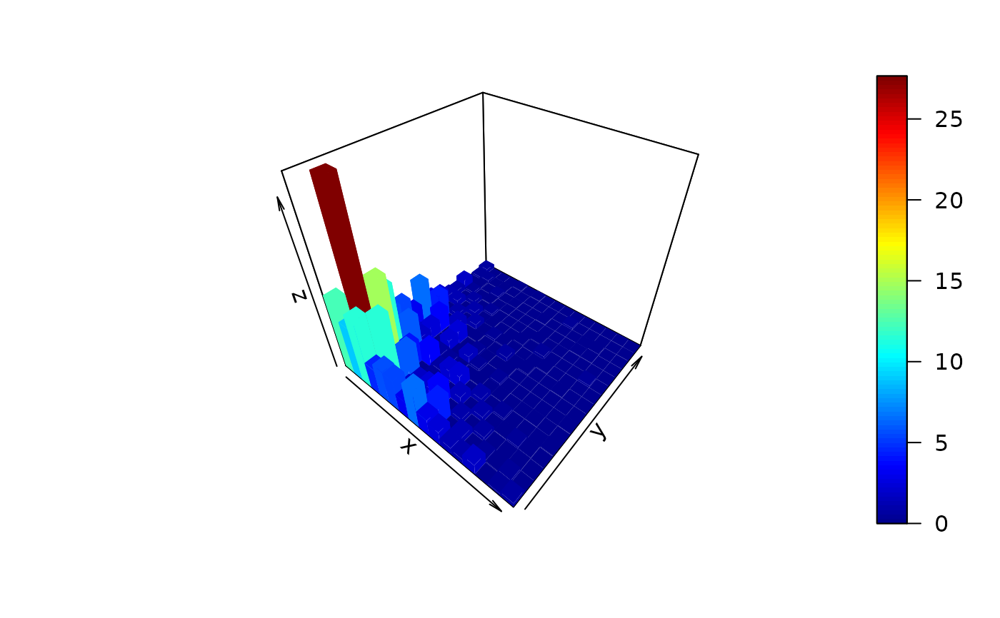
# }